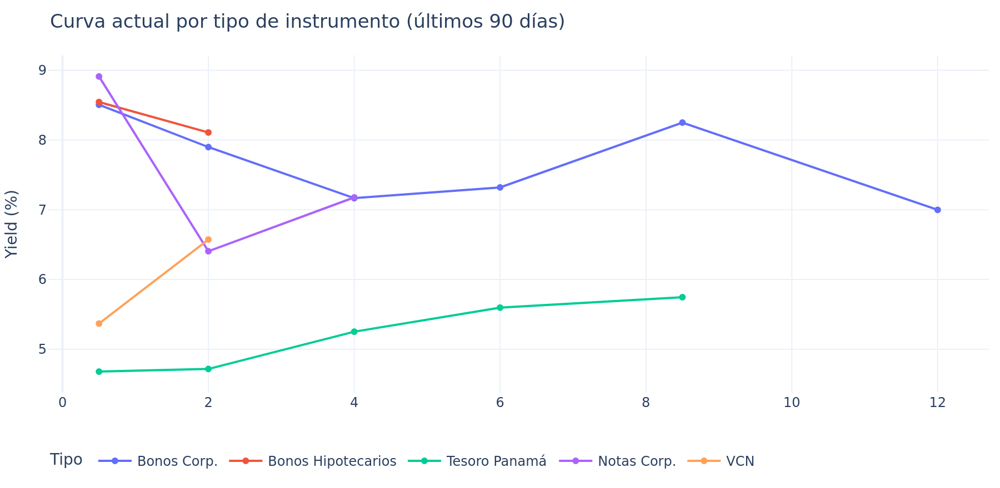
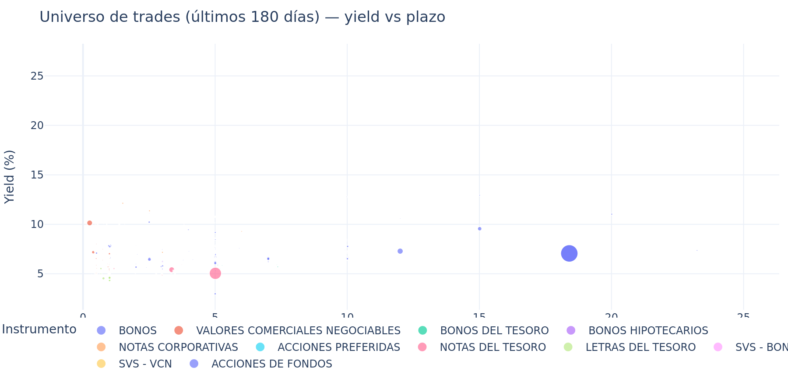
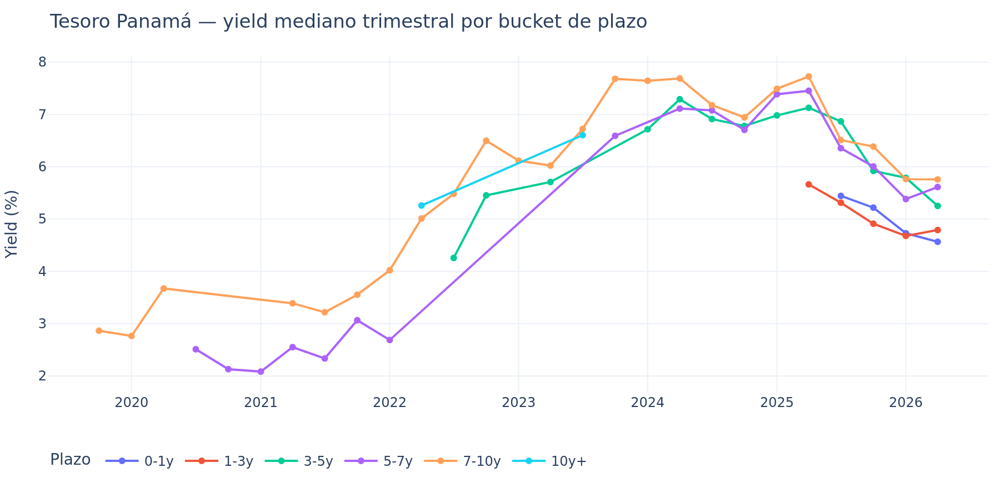
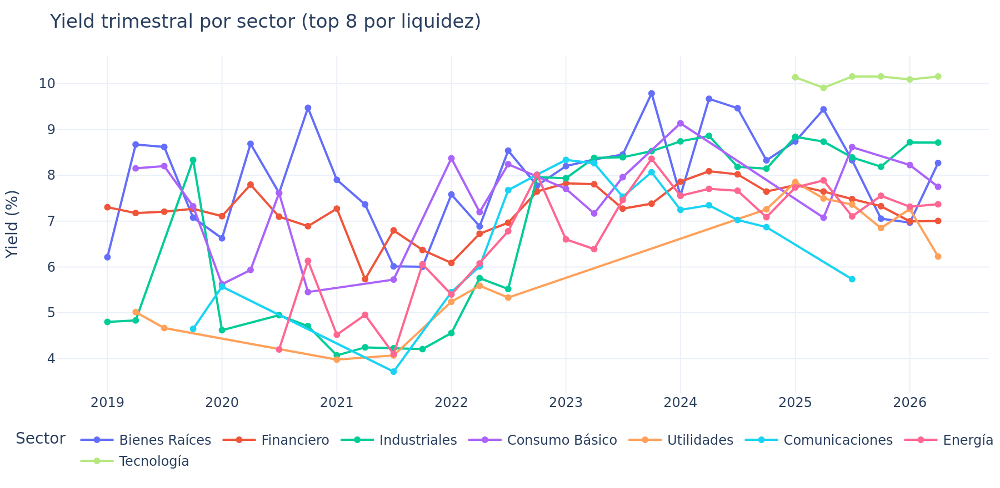
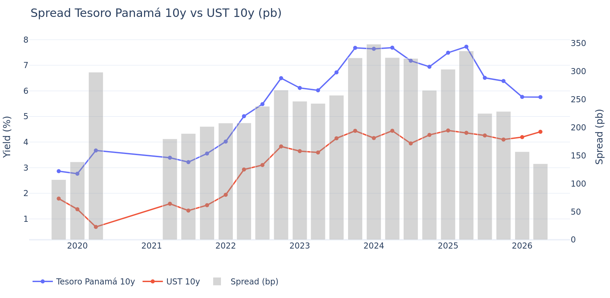
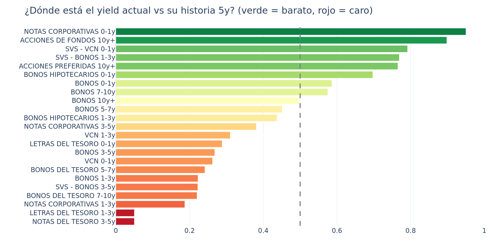
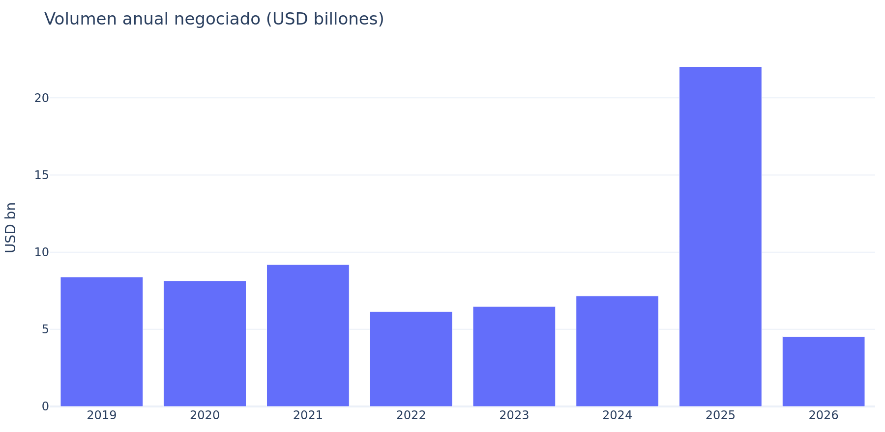

Estudio de Renta Fija de Panamá
Niveles actuales de tasas vs su historia · May 2026
Fuente: Bolsa Latinoamericana de Valores (Latinex) · Período: 2019-01-21 a 2026-05-25
1. Resumen ejecutivo
Hallazgos principales
- Pendiente Tesoro Panamá: la curva está empinada en 105 pb entre 0-3y y 7y+ (corto 4.70% vs largo 5.75%).
- Prima VCN vs Letras del Tesoro (0-1y): 69 pb (VCN 5.37% vs Letras 4.68%).
- Bonos Hipotecarios: yield mediano 8.33% — prima de ~313 pb sobre Tesoro Panamá.
- Spread Panamá 10y vs UST 10y: 135 pb hoy vs mediana histórica 240 pb (COMPRIMIDO vs media).
- Más barato vs su historia 5y: NOTAS CORPORATIVAS 0-1y en percentil 95 (8.91% vs mediana 5y 6.26%).
- Más caro vs su historia 5y: NOTAS DEL TESORO 3-5y en percentil 5 (5.25% vs mediana 5y 6.90%).
2. Curva actual de rendimientos

Yield mediano por bucket de plazo y tipo de instrumento. Ventana: últimos 90 días.
La curva por instrumento muestra el ordenamiento esperado por riesgo crediticio:
Tesoro < VCN ≈ Notas Corporativas < Bonos Corporativos < Bonos Hipotecarios. La
pendiente del Tesoro Panamá es positiva en todo el tramo, lo que es coherente con un
mercado dolarizado que sigue de cerca la curva UST.
3. Dispersión y universo negociado

Cada punto es un trade de los últimos 180 días. Tamaño = monto operado.
4. Evolución histórica — Tesoro Panamá

Mediana trimestral del YTM por bucket de plazo. La profundidad disminuye en los primeros años por menor liquidez registrada.
5. Sectores corporativos — evolución

Promedio ponderado de yields trimestrales por sector (top 8 por liquidez acumulada).
6. Spread soberano Panamá vs UST 10y

El spread se mide entre el bucket 7-10y del Tesoro Panamá y el UST 10y promedio trimestral.
7. Posición actual vs historia 5 años

Cada barra es (instrumento × bucket de plazo). Percentil ALTO (verde) = yield negociado hoy es alto vs su distribución 5y → instrumento BARATO. Percentil BAJO (rojo) = yield comprimido → CARO.
8. Liquidez del mercado

Volumen anual negociado (USD miles de millones).
9. Metodología
Cobertura de datos
Universo: 100% de emisiones vigentes registradas en Latinex (2,573) más toda la tape
de transacciones disponible (10 años, 84,191 operaciones). Adicionalmente, US Treasury
daily yield curve desde 2015 para benchmark.
Cálculo de YTM
Para cada trade de bono a tasa fija con información completa, se reconstruyen los
flujos hasta vencimiento (cupón × frecuencia + amortización bullet) y se resuelve por
bisección la tasa que iguala el VP de flujos al precio limpio negociado. Bases
soportadas: 30/360, ACT/360, 365/360, ACT/365, ACT/ACT.
Buckets
Plazo residual agrupado en 0-1y, 1-3y, 3-5y, 5-7y, 7-10y, 10y+. Para series
históricas se usa frecuencia trimestral con mínimo 3 trades por celda.
Proxy de crédito
Sin acceso a feed licenciado de calificaciones, se construye un proxy por sector +
tipo de instrumento (AAA-PAN-Sov para Tesoro, BBB-Bank para Financiero, etc.).
Adicionalmente, el spread negociado vs Tesoro mismo bucket actúa como medida
revealed-market del riesgo crediticio.
Limitaciones declaradas
- Los precios son de transacciones pactadas (no order book continuo) — hay ruido en yields individuales. Se mitiga con medianas por bucket.
- Bonos con cláusulas call/put se tratan como bullet salvo evidencia desde el endpoint
/pago.
- Bonos a tasa variable se excluyen de las curvas FIJA.
- Calificaciones públicas reales quedan pendientes para una próxima iteración (Bloomberg, Fitch CA, Equilibrium, PCR).
Reproducibilidad
El estudio es 100% reproducible desde la herramienta interactiva publicada en
GitHub Pages. Cada conclusión de este PDF puede verificarse en la app aplicando los
filtros correspondientes (Sector, Instrumento, Bucket, Período).
Generado: 2026-05-25T23:57 · Datos: latinexbolsa.com · UST: home.treasury.gov
Este estudio es informativo y no constituye recomendación de inversión.